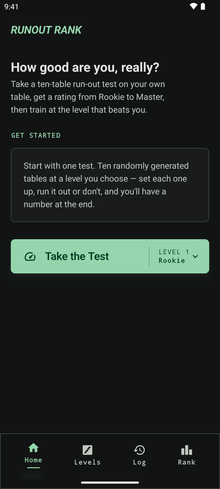
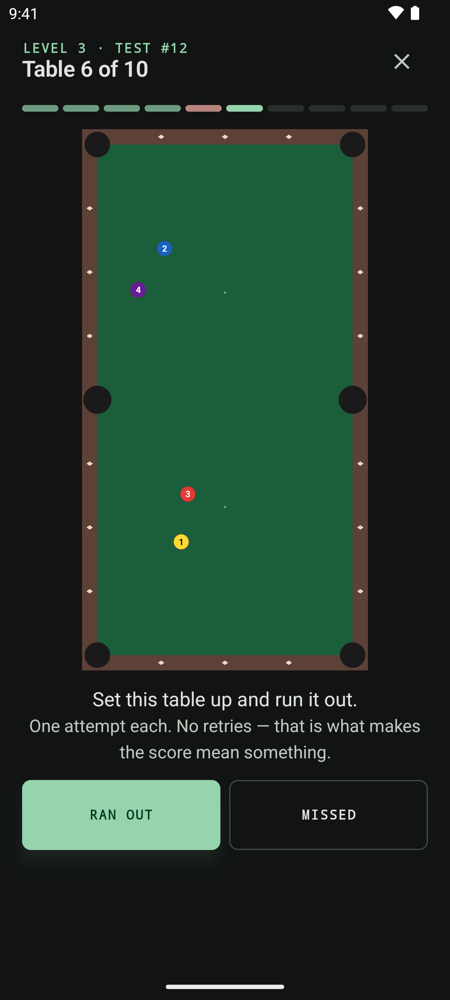
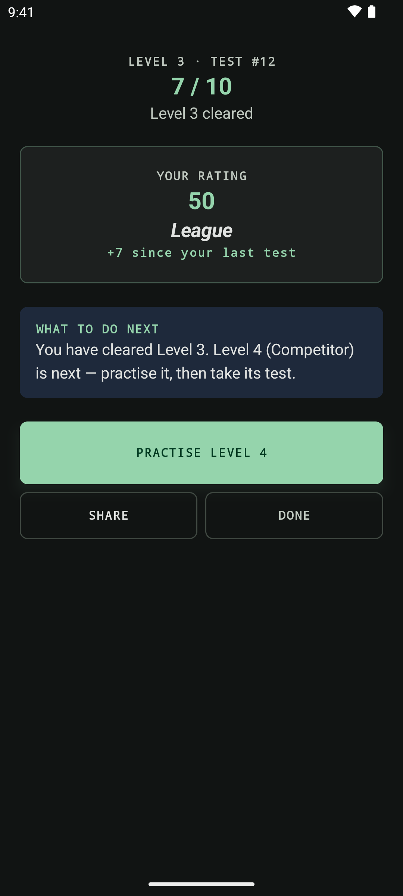
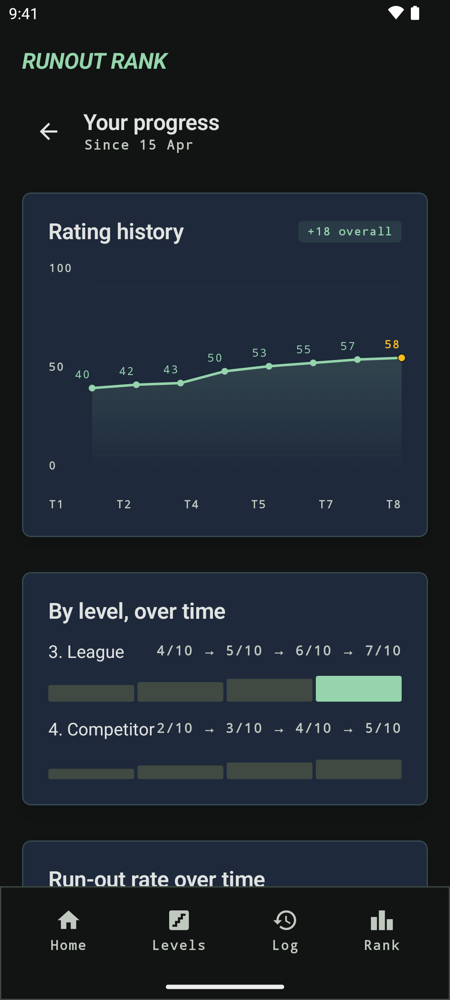

Chỉ số bi-a tuyệt đối · Android & iOS
Chỉ số bi-a của bạn. Tối nay, chứ không phải sau 200 ván.
Chỉ số của giải đấu cần hàng trăm trận thì con số mới có ý nghĩa, và kết quả bạn nhận được còn phụ thuộc vào việc thành phố của bạn tình cờ có những ai. Runout Rank đo bạn với chính chiếc bàn: mười thế bi, mỗi thế một lần, một chỉ số 0–100 chỉ trong một buổi.
Không cần giải đấu · Không cần đối thủ · Không cần tài khoản · Chạy ngoại tuyến

ván mỗi bài kiểm tra, mỗi ván một lần
buổi là có chỉ số đầy đủ, không phải chờ 200 ván
chỉ số và hạng, ngay khi bạn kết thúc
giải đấu, đối thủ và tài khoản cần có
Vì sao phải bận tâm
Chỉ số giải đấu tốn cả một mùa mà vẫn dao động theo thành phố của bạn.
Phải 200 ván nó mới là thật
FargoRate xem 200 ván là mức tối thiểu để một chỉ số được coi là đã xác lập. Nghĩa là một giải đấu, một mùa giải và một loạt khoản phí, trước khi bạn biết mình đang đứng ở đâu.
Con số của bạn mô tả nơi bạn sống
Chỉ số tương đối được neo vào những người quanh bạn, nên một cộng đồng bi-a địa phương mỏng hoặc biệt lập sẽ trôi dạt so với phần còn lại của thế giới.
Lời giải
Đo người chơi với chiếc bàn, chứ không phải với căn phòng.
Mỗi cấp độ ấn định chính xác điều gì làm nên độ khó — số bi, có được đặt bi cái tự do hay không, các bi nằm sát nhau đến mức nào, bi cản. Những ràng buộc đó chính là thước đo, và chúng giống nhau với tất cả mọi người. Vượt qua chúng thì con số đi lên. Không gì khác làm nó thay đổi.
Tuyệt đối, không phải tương đối
Không có nhóm đối thủ mạnh hay yếu, và cũng chẳng có gì để trôi dạt theo.
Một buổi, không phải một mùa
Khoảng một giờ bên bàn bi-a, và bạn kết thúc với một chỉ số thật chứ không phải con số tạm.
Không có gì để học thuộc
Thế bi được tạo mới cho mỗi bài kiểm tra, nên thứ bạn đối mặt luôn là cấp độ đó, chứ không phải một bài tập mà bạn đã thuộc lòng đáp án.
Cách hoạt động
Ba bước, một lần ngồi xuống
Sắp bi đúng như ứng dụng vẽ
Mỗi thế bi được vẽ từ trên xuống, để bạn sắp đúng y như vậy ngay trước mặt mình.
Chơi đúng một lần
Dọn sạch bàn hoặc trượt, rồi ghi lại bằng một chạm. Không đánh lại, không bỏ qua.
Nhận chỉ số và một kế hoạch
Điểm số, chỉ số, hạng của bạn — và cấp độ đang chặn bạn lại, để luyện tiếp.

Thế bi
Một thế bi trông như thế này.
Mỗi thế bi được vẽ từ trên xuống, đúng tỷ lệ, để bạn sắp lại trên mặt nỉ ngay trước mặt và chơi cú đánh thật. Nó nằm trên màn hình suốt lượt chơi, nên bạn có thể dựng lại thế bi nếu lỡ làm xô lệch.
- Các con số là thứ tự bạn phải đưa bi vào lỗ — không phải điểm của bi
- Bi cản được vẽ xỉn màu và không đánh số: chúng chắn đường, chứ không nằm trong thứ tự
- Bi cái xuất hiện từ cấp Advanced trở lên. Dưới mức đó bạn được đặt bi cái tự do

Kết quả
Một chỉ số, và cấp độ đang chặn bạn lại.
Bảy trên mười là vượt qua một cấp độ. Bạn nhận được điểm số, chỉ số 0–100, hạng của mình và con số đã dịch chuyển bao nhiêu so với lần trước — rồi đến cấp độ hiện đang chặn bạn, với phần luyện tập ở đó chỉ cách một chạm.

Tiến độ
Xem việc luyện tập có hiệu quả không.
Chỉ số, hạng, cấp độ đã vượt qua, tỷ lệ dọn bàn trọn đời và chuỗi thắng tốt nhất — miễn phí, vĩnh viễn. Runout Pro bổ sung phần lịch sử: mọi bài kiểm tra vẽ thành đồ thị theo thời gian và xuất file CSV.
Sáu cấp độ, không khóa cấp nào
Từ Rookie đến Master. Kiểm tra ở bất kỳ cấp nào — người chơi giỏi không phải cày từ đáy lên. So sánh các cấp độ →
Luyện ngay tại giới hạn của bạn
Vô số thế bi được tạo ra ở đúng cấp độ đang chặn bạn, kèm nhật ký mọi ván bạn đã chơi. Tìm hiểu về luyện tập →
Dữ liệu của bạn vẫn là của bạn
Không tài khoản, không máy chủ, chạy ngoại tuyến. Mọi thứ nằm trên thiết bị của bạn. Chính sách quyền riêng tư →
Nhận con số của bạn
Mười ván. Mỗi ván một lần. Một chỉ số trung thực.
Hãy sắp các thế bi lên chính chiếc bàn bạn vẫn chơi. Ứng dụng chấm điểm các lượt dọn bàn và cho bạn biết nên luyện ở cấp độ nào tiếp theo.